Etiquette patient
URGENCE VITALE
en service d'hospitalisation
conventionnelle
Date : .. / .. / 20..
ACTIONS SIMULTANÉES A ENTREPRENDRE AVANT L'ARRIVEE DE L'EQUIPE DE REANIMATION
Situation aiguë mettant en jeu le pronostic vital
et nécessitant une action immédiate
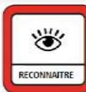
Horaires
Par exemple (non exhaustif):
.. H ..
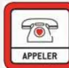
Appeler la ligne URGENCE VITALE au .....
.. H ..
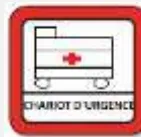
Appeler des renforts
Faire apporter le chariot d'urgence et le DSA
Hypotension –Etat de choc
Position : surélever les membres inférieurs
2ème VVP
Hémocue si disponible .....
Détresse respiratoire
Position : ½ assise
Coma
Position : PLS
Température .....
Glycémie .....
Grossesse manifeste
Position : décubitus latéral gauche
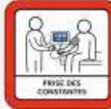
Mesure rapprochée des paramètres vitaux (par ex, toutes les 3 min)
Maintien à jeun
Glycémie
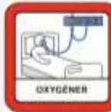
Libérer les voies aériennes
O2 Ouvert à 15 L/minute au masque à haute concentration
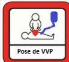
VVP fonctionnelle :
- Vérifier VVP en place ou poser 1 VVP AVEC robinet
- Base de NaCl 0,9% 500 mL pour purger la voie
Etiquette patient
ARRÊT CARDIAQUE
en service d'hospitalisation
conventionnelle
Date : .. / .. / 20..
ACTIONS SIMULTANÉES A ENTREPRENDRE AVANT L'ARRIVEE DE L'EQUIPE DE REANIMATION
Horaires
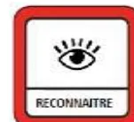
Constat Arrêt Cardiaque
- Pas de conscience
- Ne respire pas ou agonie (Gasp)
- Il n'est pas nécessaire de chercher le pouls !
.. H ..
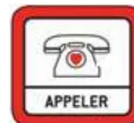
Appeler la ligne URGENCE VITALE au .....
.. H ..
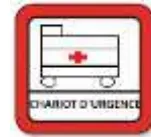
Appeler des renforts
Faire apporter le chariot d'urgence et le DSA
Vérifier le système d'aspiration
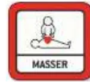
Débuter les Compressions Thoraciques (CT)
5-6 cm de profondeur
Fréquence 100/120 min
Se relayer toutes les 2 minutes
NE JAMAIS S'ARRÊTER
Si grossesse manifeste, déplacement utérin vers la gauche
.. H ..
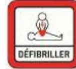
Allumer le défibrillateur (DSA), poser les patches, et suivre les instructions
(Arrêter ponctuellement les CT si demandé par le DSA)
.. H ..
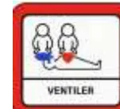
Libérer les voies aériennes
O2 Ouvert à 15 L/minute
- O2 au masque à haute concentration
- ou BAVU : 2 ventilations toutes les 30 compressions
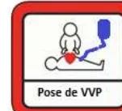
VVP fonctionnelle :
- Vérifier VVP en place
- Poser 1 VVP AVEC robinet
- Base de NaCl 0,9% 500 mL pour purger la voie
Préparer deux seringues et les étiqueter :
- Adrénaline PURE 1mg/1ml (10 mL)
- Amiodarone PURE 300 mg/6 ml
1
Etat clinique à l'arrivée :
SI ARRET CARDIAQUE
Compressions thoraciques
Relais toutes les 2 minutes
Envisager ECMO, tel : .....
SI RACS :
2
Absence de CI à la réanimation
Si grossesse utérus à l'ombilic :
Extraction fœtale sur le lieu AC
Tel Obstétricien : .....
Tel Pédiatre : .....
3
Contrôle des voies aériennes
Réglages : FiO2 ..... VT ..... FR ..... PEP .....
4
Enquête étiologique : terrain, événements récents ?
| Heure | CONSTANTES | TRAITEMENTS |
|---|---|---|
| Aréactif (v/v) | ||
| Pouls (v/v) | ||
| EtCO2 | ||
| PA | ||
| SpO2 | ||
| CEE | ||
| Adré (mg) | ||
| Amiodarone (mg) | ||
Bilan de la réanimation :
Heure RACS : .....
➢ Durée No Flow ..... minutes / Durée Low Flow : ..... minutes
ou
Heure décision arrêt RCP : ..... H .....
➢ Heure du décès : ..... H ..... le ..... / ..... / 20...
Information des proches du patient :
Traçabilité :
.....
Cette feuille est scannée et intégrée au dossier informatique du /de la patient(e)
Ranger cette feuille dans le dossier médical papier
Suites à donner :